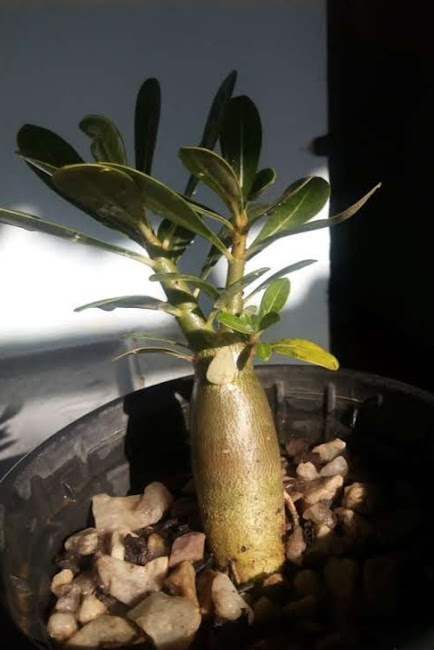
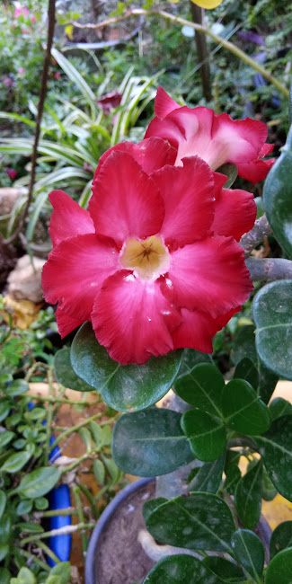
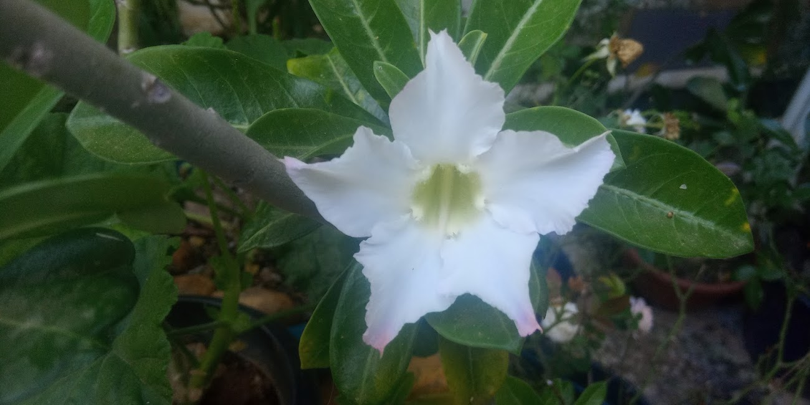
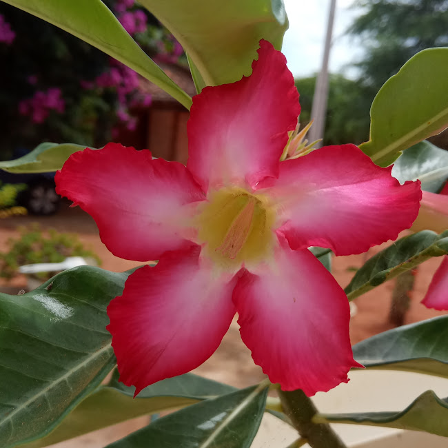

Rosa do Deserto - Adenium obesum
🎵 Ouça esta bela melodia enquanto aprende sobre rosas do deserto:
Introdução
A Rosa do Deserto é uma planta suculenta de origem africana conhecida por suas flores exuberantes e caules grossos que armazenam água. É uma planta muito popular entre colecionadores devido à sua beleza exótica e relativa facilidade de cultivo.
Informações sobre a Rosa do Deserto
- Nome Popular: Rosa do Deserto
- Nome Científico: Adenium obesum
- Origem: África e Península Arábica
- Rega: A cada 7-10 dias (deixe secar entre regas)
- Luz: Sol pleno (pelo menos 6 horas diárias)
- Altura: 1-3 metros
- Floração: Primavera e Verão
- Toxicidade: Tóxica para animais e humanos
Cuidados Específicos
- Substrato: Bem drenado, com areia e perlita
- Adubação: Fertilizante rico em fósforo para floração
- Poda: No final do inverno para formatar
- Transplante: A cada 2-3 anos na primavera
- Proteção: Contra geadas e excesso de chuva
- Pragas: Cochonilhas e ácaros - tratar com inseticidas específicos
Galeria de Fotos




Veja esse video sobre rosas do deserto: